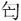

帷哭君成踊，反命于介，自是走之齐。鲁人徐伤归父之无后也，于是使婴齐后之也。
帷哭君成踊，反命于介，自是走之齐。鲁人徐伤归父之无后也，于是使婴齐后之也。春秋公羊传卷十八
成公下
成公十一年
春，王三月，公至自晋。
晋侯使郤州来聘。己丑，及郤州盟。
夏，季孙行父如晋。
秋，叔孙侨如如齐。
冬十月。
成公十二年
春，周公出奔晋。周公者何？天子之三公也。王者无外，此其言出何？自其私土而出也。
夏，公会晋侯、卫侯于沙泽。
秋，晋人败狄于交刚。
冬十月。
成公十三年
春，晋侯使郤锜来乞师。
三月，公如京师。
夏五月，公自京师，遂会晋侯、齐侯、宋公、卫侯、郑伯、曹伯、邾娄人、滕人伐秦。其言自京师何？公凿行也。公凿行奈何？不敢过天子也。
曹伯庐卒于师。
秋七月，公至自伐秦。
冬，葬曹宣公。
成公十四年
春，王正月，莒子朱卒。
夏，卫孙林父自晋归于卫。
秋，叔孙侨如如齐逆女。
郑公子喜率师伐许。
九月，侨如以夫人妇姜氏至自齐。
冬十月庚寅，卫侯臧卒。
秦伯卒。
成公十五年
春，王二月，葬卫定公。
三月乙巳，仲婴齐卒。仲婴齐者何？公孙婴齐也。公孙婴齐则曷为谓之仲婴齐？为兄后也。为兄后则曷为谓之仲婴齐？为人后者为之子也。为人后者为其子，则其称仲何？孙以王父字为氏也。然则婴齐孰后？后归父也。归父使于晋而未反，何以后之？叔仲惠伯傅子赤者也，文公死，子幼，公子遂谓叔仲惠伯曰：“君幼如之何？愿与子虑之。”叔仲惠伯曰：“吾子相之，老夫抱之，何幼君之有？”公子遂知其不可与谋，退而杀叔仲惠伯，弑子赤而立宣公。宣公死，成公幼，臧宣公者相也。君死不哭，聚诸大夫而问焉曰：“昔者叔仲惠伯之事，孰为之？”诸大夫皆杂然曰：“仲氏也，其然乎？”于是遣归父之家，然后哭君，归父使乎晋，还自晋，至柽，闻君薨家遣，帷哭君成踊，反命于介，自是走之齐。鲁人徐伤归父之无后也，于是使婴齐后之也。
癸丑，公会晋侯、卫侯、郑伯、曹伯、宋世子成、齐国佐、邾娄人同盟于戚。晋侯执曹伯归之于京师。公至自会。
夏六月，宋公固卒。楚子伐郑。
秋八月庚辰，葬宋共公。
宋华元出奔晋。
宋华元自晋归于宋。
宋杀其大夫山。
宋鱼石出奔楚。
冬十有一月，叔孙侨如会晋士燮、齐高无咎、宋华元、卫孙林父、郑公子鳅、邾娄人会吴于钟离。曷为殊会吴？外吴也。曷为外也？《春秋》内其国而外诸夏，内诸夏而外夷狄。王者欲一乎天下，曷为以外内之辞言之？言自近者始也。
许迁于叶。
成公十六年
春，王正月，雨木冰。雨木冰者何？雨而木冰也。何以书？记异也。
夏四月辛未，滕子卒。
郑公子喜帅师侵宋。
六月丙寅朔，日有食之。
晋侯使栾黡来乞师。
甲午晦。晦者何？冥也。何以书？记异也。
晋侯及楚子、郑伯战于鄢陵，楚子、郑师败绩。败者称师，楚何以不称师？王痍也。王痍者何？伤乎矢也。然则何以不言师败绩？末言尔。
楚杀其大夫公子侧。
秋，公会晋侯、齐侯、卫侯、宋华元、邾娄人于沙随。不见公，公至自会。不见公者何？公不见见也。公不见见，大夫执。何以致会？不耻也。曷为不耻？公幼也。
公会尹子、晋侯、齐国佐、邾娄人伐郑。
曹伯归自京师。执而归者名，曹伯何以不名？而不言复归于曹何？易也。其易奈何？公子喜时在内也。公子喜时在内则何以易？公子喜时者仁人也。内平其国而待之，外治诸京师而免之。其言自京师何？言甚易也，舍是无难矣。
九月，晋人执季孙行父，舍之于招丘。执未可言舍之者，此其言舍之何？仁之也。曰在招丘悕矣。执未有言仁之者，此其言人之何？代公执也。其代公执奈何？前此者，晋人来乞师而不与，公会，晋侯将执公，季孙行父曰：“此臣之罪也。”于是执季孙行父。成公将会厉公，会不当期，将执公。季孙行父曰：“臣有罪，执其君；子有罪，执其父；此听失之大者也。今此臣之罪也，舍臣之身，而执臣之君，吾恐听失之为宗庙羞也。”于是执季孙行父。
冬十月乙亥，叔孙侨如出奔齐。
十有二月乙丑，季孙行父及晋郤州盟于扈。
公至自会。
乙酉，刺公子偃。
成公十七年
春，卫北宫结率师侵郑。
夏，公会尹子、单子、晋侯、齐侯、宋公、卫侯、曹伯、邾娄人伐郑。
六月乙酉，同盟于柯陵。
秋，公至自会。
齐高无咎出奔莒。
九月辛丑，用郊。用者何？用者不宜用也，九月非所用郊也。然则郊曷用？郊用正月上辛，或曰用然后郊。
晋侯使荀 来乞师。
来乞师。
冬，公会单子、晋侯、宋公、卫侯、曹伯、齐人、邾娄人伐郑。十有一月，公至自伐郑。
壬申，公孙婴齐卒于貍轸。非此月日也，曷为以此月日卒之？待君命然后卒大夫。曷为待君命然后卒大夫？前此者婴齐走之晋，公会晋侯，将执公。婴齐为公请，公许之，反为大夫，归，至于貍轸而卒。无君命不敢卒大夫。公至，曰：“吾固许之，反为大夫。”然后卒之。
十有二月丁巳朔，日有食之。
邾娄子貜且卒。
晋杀其大夫郤锜、郤州、郤至。
楚人灭舒庸。
成公十八年
春，王正月，晋杀其大夫胥童。
庚申，晋弑其君州蒲。
齐杀其大夫国佐。
公如晋。
夏，楚子、郑伯伐宋。
宋鱼石复入于彭城。
公至自晋。
晋侯使士来聘。
秋，杞伯来朝。
八月，邾娄子来朝。
筑鹿囿。何以书？讥。何讥尔？有囿矣，又为也。
己丑，公薨于路寝。
冬，楚人、郑人侵宋。
晋侯使士彭来乞师。
十有二月，仲孙蔑会晋侯、宋公、卫侯、邾娄子、齐崔杼同盟于虚朾。
丁未，葬我君成公。